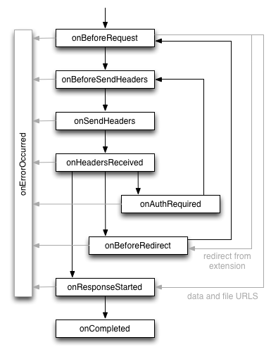

Use the chrome.webRequest module to intercept, block,
or modify requests in-flight and to observe and analyze traffic.
Manifest
You must declare the "webRequest" permission in the extension manifest to use the web request
API, along with host permissions
for any hosts whose network requests you want to access. If you want to
use the web request API in a blocking fashion, you need to request
the "webRequestBlocking" permission in addition.
For example:
{
"name": "My extension",
...
"permissions": [
"webRequest",
"*://*.google.com"
],
...
}
Life cycle of requests
The web request API defines a set of events that follow the life cycle of a web
request. You can use these events to observe and analyze traffic. Certain
synchronous events will allow you to intercept, block, or modify a request.
The event life cycle for successful requests is illustrated here, followed by
event definitions:

onBeforeRequest (optionally synchronous)- Fires when a request is about to occur. This event is sent before any TCP
connection is made and can be used to cancel or redirect requests.
onBeforeSendHeaders (optionally synchronous)- Fires when a request is about to occur and the initial headers have been
prepared. The event is intended to allow extensions to add, modify, and delete
request headers (*). The
onBeforeSendHeaders event is passed to all subscribers, so
different subscribers may attempt to modify the request; see the Implementation details section for how this is
handled. This event can be used to cancel the request.
onSendHeaders- Fires after all extensions have had a chance to modify the request
headers, and presents the final (*)
version. The event is triggered before the headers are sent to the network.
This event is informational and handled asynchronously. It does not allow
modifying or cancelling the request.
onHeadersReceived (optionally synchronous)- Fires each time that an HTTP(S) response header is received. Due
to redirects and authentication requests this can happen multiple times per
request. This event is intended to allow extensions to add, modify, and delete
response headers, such as incoming Set-Cookie headers.
onAuthRequired (optionally synchronous)- Fires when a request requires authentication of the user. This event can
be handled synchronously to provide authentication credentials. Note that
extensions may provide invalid credentials. Take care not to enter an infinite
loop by repeatedly providing invalid credentials.
onBeforeRedirect- Fires when a redirect is about to be executed. A redirection can be
triggered by an HTTP response code or by an extension. This event is
informational and handled asynchronously. It does not allow you to modify or
cancel the request.
onResponseStarted- Fires when the first byte of the response body is received. For HTTP
requests, this means that the status line and response headers are
available. This event is informational and handled asynchronously. It does not
allow modifying or cancelling the request.
onCompleted- Fires when a request has been processed successfully.
onErrorOccurred- Fires when a request could not be processed successfully.
The web request API guarantees that for each request either
onCompleted or onErrorOccurred is fired as the final
event with one exception: If a request is redirected to a data://
URL, onBeforeRedirect is the last reported event.
The following headers are currently not provided to the
onBeforeSendHeaders event. This list is not guaranteed to be
complete nor stable.
- Authorization
- Cache-Control
- Connection
- Content-Length
- Host
- If-Modified-Since
- If-None-Match
- If-Range
- Partial-Data
- Pragma
- Proxy-Authorization
- Proxy-Connection
- Transfer-Encoding
The webRequest API only exposes requests that the extension has
permission to see, given its
host permissions.
Moreover, only the following schemes are accessible:
http://,
https://,
ftp://,
file://, or
chrome-extension://.
In addition, even certain requests with URLs using one of the above schemes
are hidden, e.g.,
chrome-extension://other_extension_id where
other_extension_id is not the ID of the extension to handle
the request,
https://www.google.com/chrome,
and others (this list is not complete). Also synchronous XMLHttpRequests from
your extension are hidden from blocking event handlers in order to prevent
deadlocks.
Concepts
As the following sections explain, events in the web request API use request
IDs, and you can optionally specify filters and extra information when you
register event listeners.
Request IDs
Each request is identified by a request ID. This ID is unique within a
browser session and the context of an extension. It remains constant during the
the life cycle of a request and can be used to match events for the same
request. Note that several HTTP requests are mapped to one web request in case
of HTTP redirection or HTTP authentication.
Registering event listeners
To register an event listener for a web request, you use a variation on the
usual addListener() function.
In addition to specifying a callback function,
you have to specify a filter argument and you may specify an optional extra info
argument.
The three arguments to the web request API's addListener() have
the following definitions:
var callback = function(details) {...};
var filter = {...};
var opt_extraInfoSpec = [...];
Here's an example of listening for the onBeforeRequest
event:
chrome.webRequest.onBeforeRequest.addListener(
callback, filter, opt_extraInfoSpec);
Each addListener() call takes a mandatory callback function as
the first parameter. This callback function is passed a dictionary containing
information about the current URL request. The information in this dictionary
depends on the specific event type as well as the content of
opt_extraInfoSpec.
If the optional opt_extraInfoSpec array contains the string
'blocking' (only allowed for specific events), the callback
function is handled synchronously. That means that the request is blocked until
the callback function returns. In this case, the callback can return a
BlockingResponse that determines the further
life cycle of the request. Depending on the context, this response allows
cancelling or redirecting a request (onBeforeRequest), cancelling a
request or modifying headers (onBeforeSendHeaders,
onHeadersReceived), or providing authentication credentials
(onAuthRequired).
The RequestFilter
filter allows limiting the requests for which events are
triggered in various dimensions:
- URLs
- URL patterns such as
*://www.google.com/foo*bar.
- Types
- Request types such as
main_frame (a document that is loaded
for a top-level frame), sub_frame (a document that is loaded for
an embedded frame), and image (an image on a web site).
See RequestFilter.
- Tab ID
- The identifier for one tab.
- Window ID
- The identifier for a window.
Depending on the event type, you can specify strings in
opt_extraInfoSpec to ask for additional information about the
request. This is used to provide detailed information on request's data only
if explicitly requested.
Implementation details
Several implementation details can be important to understand when developing
an extension that uses the web request API:
Conflict resolution
In the current implementation of the web request API, a request is considered
as cancelled if at least one extension instructs to cancel the request. If
an extension cancels a request, all extensions are notified by an
onErrorOccurred event. Only one extension is allowed to redirect a
request or modify a header at a time. If more than one extension attempts to
modify the request, the most recently installed extension wins and all others
are ignored. An extension is not notified if its instruction to modify or
redirect has been ignored.
Caching
Chrome employs two caches — an on-disk cache and a very fast in-memory
cache. The lifetime of an in-memory cache is attached to the lifetime of a
render process, which roughly corresponds to a tab. Requests that are answered
from the in-memory cache are invisible to the web request API. If a request
handler changes its behavior (for example, the behavior according to which
requests are blocked), a simple page refresh might not respect this changed
behavior. To make sure the behavior change goes through, call
handlerBehaviorChanged() to flush the in-memory cache. But don't do
it often; flushing the cache is a very expensive operation. You don't need to
call handlerBehaviorChanged() after registering or unregistering an
event listener.
Timestamps
The timestamp property of web request events is only guaranteed to
be internally consistent. Comparing one event to another event will give
you the correct offset between them, but comparing them to the current time
inside the extension (via (new Date()).getTime(), for instance)
might give unexpected results.
Examples
The following example illustrates how to block all requests to
www.evil.com:
chrome.webRequest.onBeforeRequest.addListener(
function(details) {
return {cancel: details.url.indexOf("://www.evil.com/") != -1};
},
{urls: ["<all_urls>"]},
["blocking"]);
As this function uses a blocking event handler, it requires the "webRequest"
as well as the "webRequestBlocking" permission in the manifest file.
The following example achieves the same goal in a more efficient way because
requests that are not targeted to www.evil.com do not need to be
passed to the extension:
chrome.webRequest.onBeforeRequest.addListener(
function(details) { return {cancel: true}; },
{urls: ["*://www.evil.com/*"]},
["blocking"]);
The following example illustrates how to delete the User-Agent header from
all requests:
chrome.webRequest.onBeforeSendHeaders.addListener(
function(details) {
for (var i = 0; i < details.requestHeaders.length; ++i) {
if (details.requestHeaders[i].name === 'User-Agent') {
details.requestHeaders.splice(i, 1);
break;
}
}
return {requestHeaders: details.requestHeaders};
},
{urls: ["<all_urls>"]},
["blocking", "requestHeaders"]);
For more example code, see the web request
samples.
API Reference: chrome.webRequest
Types
RequestFilter
- ( object )
-
An object describing filters to apply to webRequest events.
-
urls
(
array of string
)
-
A list of URLs or URL patterns. Requests that cannot match any of the URLs will be filtered out.
-
types
(
optional
array of enumerated string ["main_frame", "sub_frame", "stylesheet", "script", "image", "object", "xmlhttprequest", "other"]
)
-
A list of request types. Requests that cannot match any of the types will be filtered out.
-
tabId
(
optional
integer
)
-
windowId
(
optional
integer
)
- ( array of object )
-
An array of HTTP headers. Each header is represented as a dictionary containing the keys
name and either value or binaryValue.
BlockingResponse
- ( object )
-
Returns value for event handlers that have the 'blocking' extraInfoSpec applied. Allows the event handler to modify network requests.
-
cancel
(
optional
boolean
)
-
If true, the request is cancelled. Used in onBeforeRequest, this prevents the request from being sent.
-
redirectUrl
(
optional
string
)
-
Only used as a response to the onBeforeRequest event. If set, the original request is prevented from being sent and is instead redirected to the given URL.
-
requestHeaders
(
optional
HttpHeaders
)
-
Only used as a response to the onBeforeSendHeaders event. If set, the request is made with these request headers instead.
-
responseHeaders
(
optional
HttpHeaders
)
-
Only used as a response to the onHeadersReceived event. If set, the server is assumed to have responded with these response headers instead. Only return
responseHeaders if you really want to modify the headers in order to limit the number of conflicts (only one extension may modify responseHeaders for each request).
-
authCredentials
(
optional
object
)
-
Only used as a response to the onAuthRequired event. If set, the request is made using the supplied credentials.
-
UploadData
- ( object )
-
Contains data uploaded in a URL request.
-
bytes
(
optional
any
)
-
An ArrayBuffer with a copy of the data.
-
file
(
optional
string
)
-
A string with the file's path and name.
Properties
MAX_HANDLER_BEHAVIOR_CHANGED_CALLS_PER_10_MINUTES
chrome.webRequest.MAX_HANDLER_BEHAVIOR_CHANGED_CALLS_PER_10_MINUTES
- MAX_HANDLER_BEHAVIOR_CHANGED_CALLS_PER_10_MINUTES (
20 )
-
The maximum number of times that
handlerBehaviorChanged can be called per 10 minute sustained interval. handlerBehaviorChanged is an expensive function call that shouldn't be called often.
Methods
handlerBehaviorChanged
chrome.webRequest.handlerBehaviorChanged(function callback)
Needs to be called when the behavior of the webRequest handlers has changed to prevent incorrect handling due to caching. This function call is expensive. Don't call it often.
Parameters
-
callback
(
optional
function
)
Callback
If you specify the callback parameter, it should
specify a function that looks like this:
function() {...};
Events
onBeforeRequest
chrome.webRequest.onBeforeRequest.addListener(function(object details) {...});
Fired when a request is about to occur.
Listener Parameters
- details ( object )
-
- requestId ( string )
- The ID of the request. Request IDs are unique within a browser session. As a result, they could be used to relate different events of the same request.
- method ( string )
- Standard HTTP method.
- frameId ( integer )
- The value 0 indicates that the request happens in the main frame; a positive value indicates the ID of a subframe in which the request happens. If the document of a (sub-)frame is loaded (
type is main_frame or sub_frame), frameId indicates the ID of this frame, not the ID of the outer frame. Frame IDs are unique within a tab. - parentFrameId ( integer )
- ID of frame that wraps the frame which sent the request. Set to -1 if no parent frame exists.
- requestBody ( optional object )
- Contains the HTTP request body data. Only provided if extraInfoSpec contains 'requestBody'.
-
- error ( optional string )
- Errors when obtaining request body data.
- formData ( optional object )
- If the request method is POST and the body is a sequence of key-value pairs encoded in UTF8, encoded as either multipart/form-data, or application/x-www-form-urlencoded, this dictionary is present and for each key contains the list of all values for that key. If the data is of another media type, or if it is malformed, the dictionary is not present. An example value of this dictionary is {'key': ['value1', 'value2']}.
- raw ( optional array of UploadData )
- If the request method is PUT or POST, and the body is not already parsed in formData, then the unparsed request body elements are contained in this array.
- tabId ( integer )
- The ID of the tab in which the request takes place. Set to -1 if the request isn't related to a tab.
- type ( enumerated string ["main_frame", "sub_frame", "stylesheet", "script", "image", "object", "xmlhttprequest", "other"] )
- How the requested resource will be used.
- timeStamp ( double )
- The time when this signal is triggered, in milliseconds since the epoch.
chrome.webRequest.onBeforeSendHeaders.addListener(function(object details) {...});
Fired before sending an HTTP request, once the request headers are available. This may occur after a TCP connection is made to the server, but before any HTTP data is sent.
Listener Parameters
- details ( object )
-
- requestId ( string )
- The ID of the request. Request IDs are unique within a browser session. As a result, they could be used to relate different events of the same request.
- method ( string )
- Standard HTTP method.
- frameId ( integer )
- The value 0 indicates that the request happens in the main frame; a positive value indicates the ID of a subframe in which the request happens. If the document of a (sub-)frame is loaded (
type is main_frame or sub_frame), frameId indicates the ID of this frame, not the ID of the outer frame. Frame IDs are unique within a tab. - parentFrameId ( integer )
- ID of frame that wraps the frame which sent the request. Set to -1 if no parent frame exists.
- tabId ( integer )
- The ID of the tab in which the request takes place. Set to -1 if the request isn't related to a tab.
- type ( enumerated string ["main_frame", "sub_frame", "stylesheet", "script", "image", "object", "xmlhttprequest", "other"] )
- How the requested resource will be used.
- timeStamp ( double )
- The time when this signal is triggered, in milliseconds since the epoch.
- requestHeaders ( optional HttpHeaders )
- The HTTP request headers that are going to be sent out with this request.
chrome.webRequest.onSendHeaders.addListener(function(object details) {...});
Fired just before a request is going to be sent to the server (modifications of previous onBeforeSendHeaders callbacks are visible by the time onSendHeaders is fired).
Listener Parameters
- details ( object )
-
- requestId ( string )
- The ID of the request. Request IDs are unique within a browser session. As a result, they could be used to relate different events of the same request.
- method ( string )
- Standard HTTP method.
- frameId ( integer )
- The value 0 indicates that the request happens in the main frame; a positive value indicates the ID of a subframe in which the request happens. If the document of a (sub-)frame is loaded (
type is main_frame or sub_frame), frameId indicates the ID of this frame, not the ID of the outer frame. Frame IDs are unique within a tab. - parentFrameId ( integer )
- ID of frame that wraps the frame which sent the request. Set to -1 if no parent frame exists.
- tabId ( integer )
- The ID of the tab in which the request takes place. Set to -1 if the request isn't related to a tab.
- type ( enumerated string ["main_frame", "sub_frame", "stylesheet", "script", "image", "object", "xmlhttprequest", "other"] )
- How the requested resource will be used.
- timeStamp ( double )
- The time when this signal is triggered, in milliseconds since the epoch.
- requestHeaders ( optional HttpHeaders )
- The HTTP request headers that have been sent out with this request.
chrome.webRequest.onHeadersReceived.addListener(function(object deails) {...});
Fired when HTTP response headers of a request have been received.
Listener Parameters
- deails ( object )
-
- requestId ( string )
- The ID of the request. Request IDs are unique within a browser session. As a result, they could be used to relate different events of the same request.
- method ( string )
- Standard HTTP method.
- frameId ( integer )
- The value 0 indicates that the request happens in the main frame; a positive value indicates the ID of a subframe in which the request happens. If the document of a (sub-)frame is loaded (
type is main_frame or sub_frame), frameId indicates the ID of this frame, not the ID of the outer frame. Frame IDs are unique within a tab. - parentFrameId ( integer )
- ID of frame that wraps the frame which sent the request. Set to -1 if no parent frame exists.
- tabId ( integer )
- The ID of the tab in which the request takes place. Set to -1 if the request isn't related to a tab.
- type ( enumerated string ["main_frame", "sub_frame", "stylesheet", "script", "image", "object", "xmlhttprequest", "other"] )
- How the requested resource will be used.
- timeStamp ( double )
- The time when this signal is triggered, in milliseconds since the epoch.
- statusLine ( optional string )
- HTTP status line of the response.
- responseHeaders ( optional HttpHeaders )
- The HTTP response headers that have been received with this response.
onAuthRequired
chrome.webRequest.onAuthRequired.addListener(function(object details, function callback) {...});
Fired when an authentication failure is received. The listener has three options: it can provide authentication credentials, it can cancel the request and display the error page, or it can take no action on the challenge. If bad user credentials are provided, this may be called multiple times for the same request.
Listener Parameters
- details ( object )
-
- requestId ( string )
- The ID of the request. Request IDs are unique within a browser session. As a result, they could be used to relate different events of the same request.
- method ( string )
- Standard HTTP method.
- frameId ( integer )
- The value 0 indicates that the request happens in the main frame; a positive value indicates the ID of a subframe in which the request happens. If the document of a (sub-)frame is loaded (
type is main_frame or sub_frame), frameId indicates the ID of this frame, not the ID of the outer frame. Frame IDs are unique within a tab. - parentFrameId ( integer )
- ID of frame that wraps the frame which sent the request. Set to -1 if no parent frame exists.
- tabId ( integer )
- The ID of the tab in which the request takes place. Set to -1 if the request isn't related to a tab.
- type ( enumerated string ["main_frame", "sub_frame", "stylesheet", "script", "image", "object", "xmlhttprequest", "other"] )
- How the requested resource will be used.
- timeStamp ( double )
- The time when this signal is triggered, in milliseconds since the epoch.
- scheme ( string )
- The authentication scheme, e.g. Basic or Digest.
- realm ( optional string )
- The authentication realm provided by the server, if there is one.
- challenger ( object )
- The server requesting authentication.
-
- isProxy ( boolean )
- True for Proxy-Authenticate, false for WWW-Authenticate.
- responseHeaders ( optional HttpHeaders )
- The HTTP response headers that were received along with this response.
- statusLine ( optional string )
- HTTP status line of the response.
- callback ( optional function )
Callback
If you specify the callback parameter, it should
specify a function that looks like this:
function(BlockingResponse response) {...};
onResponseStarted
chrome.webRequest.onResponseStarted.addListener(function(object details) {...});
Fired when the first byte of the response body is received. For HTTP requests, this means that the status line and response headers are available.
Listener Parameters
- details ( object )
-
- requestId ( string )
- The ID of the request. Request IDs are unique within a browser session. As a result, they could be used to relate different events of the same request.
- method ( string )
- Standard HTTP method.
- frameId ( integer )
- The value 0 indicates that the request happens in the main frame; a positive value indicates the ID of a subframe in which the request happens. If the document of a (sub-)frame is loaded (
type is main_frame or sub_frame), frameId indicates the ID of this frame, not the ID of the outer frame. Frame IDs are unique within a tab. - parentFrameId ( integer )
- ID of frame that wraps the frame which sent the request. Set to -1 if no parent frame exists.
- tabId ( integer )
- The ID of the tab in which the request takes place. Set to -1 if the request isn't related to a tab.
- type ( enumerated string ["main_frame", "sub_frame", "stylesheet", "script", "image", "object", "xmlhttprequest", "other"] )
- How the requested resource will be used.
- timeStamp ( double )
- The time when this signal is triggered, in milliseconds since the epoch.
- ip ( optional string )
- The server IP address that the request was actually sent to. Note that it may be a literal IPv6 address.
- fromCache ( boolean )
- Indicates if this response was fetched from disk cache.
- statusCode ( integer )
- Standard HTTP status code returned by the server.
- responseHeaders ( optional HttpHeaders )
- The HTTP response headers that were received along with this response.
- statusLine ( optional string )
- HTTP status line of the response.
onBeforeRedirect
chrome.webRequest.onBeforeRedirect.addListener(function(object details) {...});
Fired when a server-initiated redirect is about to occur.
Listener Parameters
- details ( object )
-
- requestId ( string )
- The ID of the request. Request IDs are unique within a browser session. As a result, they could be used to relate different events of the same request.
- method ( string )
- Standard HTTP method.
- frameId ( integer )
- The value 0 indicates that the request happens in the main frame; a positive value indicates the ID of a subframe in which the request happens. If the document of a (sub-)frame is loaded (
type is main_frame or sub_frame), frameId indicates the ID of this frame, not the ID of the outer frame. Frame IDs are unique within a tab. - parentFrameId ( integer )
- ID of frame that wraps the frame which sent the request. Set to -1 if no parent frame exists.
- tabId ( integer )
- The ID of the tab in which the request takes place. Set to -1 if the request isn't related to a tab.
- type ( enumerated string ["main_frame", "sub_frame", "stylesheet", "script", "image", "object", "xmlhttprequest", "other"] )
- How the requested resource will be used.
- timeStamp ( double )
- The time when this signal is triggered, in milliseconds since the epoch.
- ip ( optional string )
- The server IP address that the request was actually sent to. Note that it may be a literal IPv6 address.
- fromCache ( boolean )
- Indicates if this response was fetched from disk cache.
- statusCode ( integer )
- Standard HTTP status code returned by the server.
- redirectUrl ( string )
- The new URL.
- responseHeaders ( optional HttpHeaders )
- The HTTP response headers that were received along with this redirect.
- statusLine ( optional string )
- HTTP status line of the response.
onCompleted
chrome.webRequest.onCompleted.addListener(function(object details) {...});
Fired when a request is completed.
Listener Parameters
- details ( object )
-
- requestId ( string )
- The ID of the request. Request IDs are unique within a browser session. As a result, they could be used to relate different events of the same request.
- method ( string )
- Standard HTTP method.
- frameId ( integer )
- The value 0 indicates that the request happens in the main frame; a positive value indicates the ID of a subframe in which the request happens. If the document of a (sub-)frame is loaded (
type is main_frame or sub_frame), frameId indicates the ID of this frame, not the ID of the outer frame. Frame IDs are unique within a tab. - parentFrameId ( integer )
- ID of frame that wraps the frame which sent the request. Set to -1 if no parent frame exists.
- tabId ( integer )
- The ID of the tab in which the request takes place. Set to -1 if the request isn't related to a tab.
- type ( enumerated string ["main_frame", "sub_frame", "stylesheet", "script", "image", "object", "xmlhttprequest", "other"] )
- How the requested resource will be used.
- timeStamp ( double )
- The time when this signal is triggered, in milliseconds since the epoch.
- ip ( optional string )
- The server IP address that the request was actually sent to. Note that it may be a literal IPv6 address.
- fromCache ( boolean )
- Indicates if this response was fetched from disk cache.
- statusCode ( integer )
- Standard HTTP status code returned by the server.
- responseHeaders ( optional HttpHeaders )
- The HTTP response headers that were received along with this response.
- statusLine ( optional string )
- HTTP status line of the response.
onErrorOccurred
chrome.webRequest.onErrorOccurred.addListener(function(object details) {...});
Fired when an error occurs.
Listener Parameters
- details ( object )
-
- requestId ( string )
- The ID of the request. Request IDs are unique within a browser session. As a result, they could be used to relate different events of the same request.
- method ( string )
- Standard HTTP method.
- frameId ( integer )
- The value 0 indicates that the request happens in the main frame; a positive value indicates the ID of a subframe in which the request happens. If the document of a (sub-)frame is loaded (
type is main_frame or sub_frame), frameId indicates the ID of this frame, not the ID of the outer frame. Frame IDs are unique within a tab. - parentFrameId ( integer )
- ID of frame that wraps the frame which sent the request. Set to -1 if no parent frame exists.
- tabId ( integer )
- The ID of the tab in which the request takes place. Set to -1 if the request isn't related to a tab.
- type ( enumerated string ["main_frame", "sub_frame", "stylesheet", "script", "image", "object", "xmlhttprequest", "other"] )
- How the requested resource will be used.
- timeStamp ( double )
- The time when this signal is triggered, in milliseconds since the epoch.
- ip ( optional string )
- The server IP address that the request was actually sent to. Note that it may be a literal IPv6 address.
- fromCache ( boolean )
- Indicates if this response was fetched from disk cache.
- error ( string )
- The error description. This string is not guaranteed to remain backwards compatible between releases. You must not parse and act based upon its content.
Sample Extensions that use chrome.webRequest
CatBlock
– I can't has cheezburger!